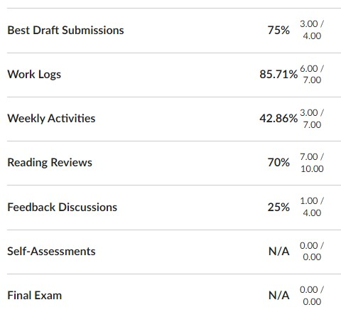

You can determine where you stand in the course by comparing the amount of work you’ve done so far to the Effort Expectations for Each Grade Level. Here is a short reminder of how the course grade works in this course and how to check your progress.
Where Does Your Course Grade Come From
You propose your course grade based on four measures:
- the Effort Expectations that you met.
- the time and intensity you put into your writing.
- what you learned by engaging in the course activities and assignments.
- how you improved your writing and communication skills over time.
As you propose your grade, you take all these measures into account, but the Effort Expectations are the starting place as you decide your base grade.
How to Check Your Progress
- Find the percentages for the work you have Completed on the Grades page in Canvas. Scroll to the bottom of the page to find a table of categories and details on the work you have completed, like this example:

- Open the Effort Expectations for Each Grade Level page to find the expected percentages for each category.
- Compare the percentages on the Grades page to the expectations on the Effort Expectations for Each Grade Level. For instance, the student in the example image has 85.71% for Work Logs; therefore, I marked they are in the B range for that category.
- Determine your progress strictly according to the percentage cut-offs. There is no rounding or bumping up.
- Look at the overall numbers to decide which course grade you are closest to. Keep this information in mind:
- You will propose the grade you deserve in your final exam, where you must suggest a specific letter grade. If you are close or between grades, you will argue in your final for where the grade should fall.
- The number of Best Drafts required for each grade level is strictly applied. You cannot earn an A if you do not earn a Complete on all of the project.
Improving During the Remainder of the Course
As you continue working in the course, the numbers will change. You can check the Grades page at any time to see the percentages for your work and compare them to the Effort Expectations for Each Grade Level.